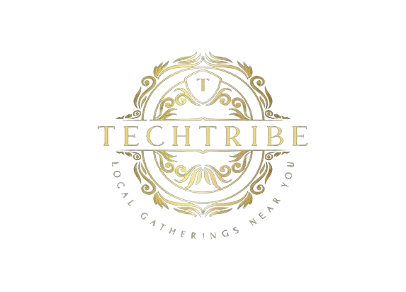

ST.JANAN LUWUM S.S KABALAGALA
TECHTRIBE CLUB

Local Gatherings Near you
| Home | About us | Activities & Projects | Resources | Join us /Membership |
Your welcome to St. Janan Luwum S.S Kabalagala Techtribe cllub
This club started in 2022 by few members who participated in it tirelessly.
Join us in exploring the world the exciting world of technology and innovation. Wether you're a beginner or a seasonal tech enthusiast, there's a place for u here.
Our members recently completed a project that allows remote controls of home devices using Arduino and Raspberry pi.
We do coding,Learn programming languages like Python, Java script.
Get involved today ( join us to be a member of the St. Jananan Luwum S.S KabalagalanTechtribe club.Learmn more about our projects and activities . Get involved in our upcoming events and competitions.
Being a member of techtribe club has been an incredible experince. i've learned so much and great friends along the way.The techtribe club has given me the skills and confidence to persue a career in technology. it's a game changer.
Our tam won first place in the schools coding competitions
Contanct us: Email:techtribeclub@gmail.com